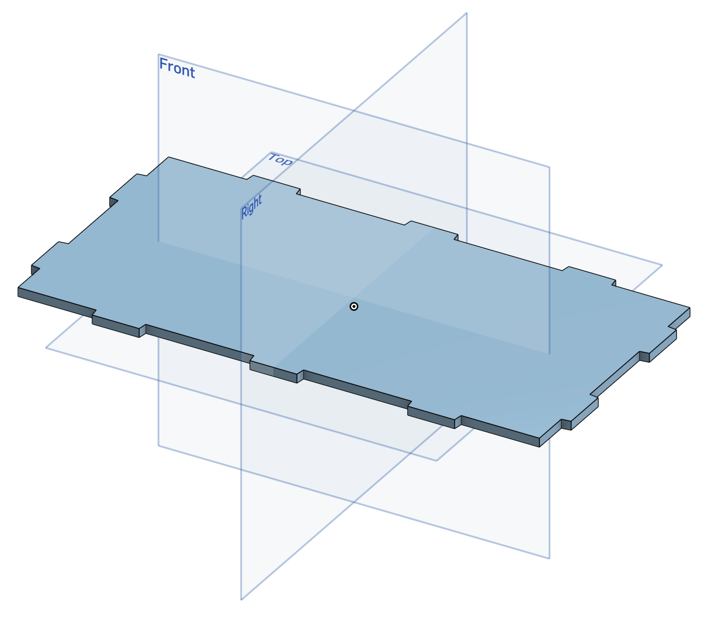
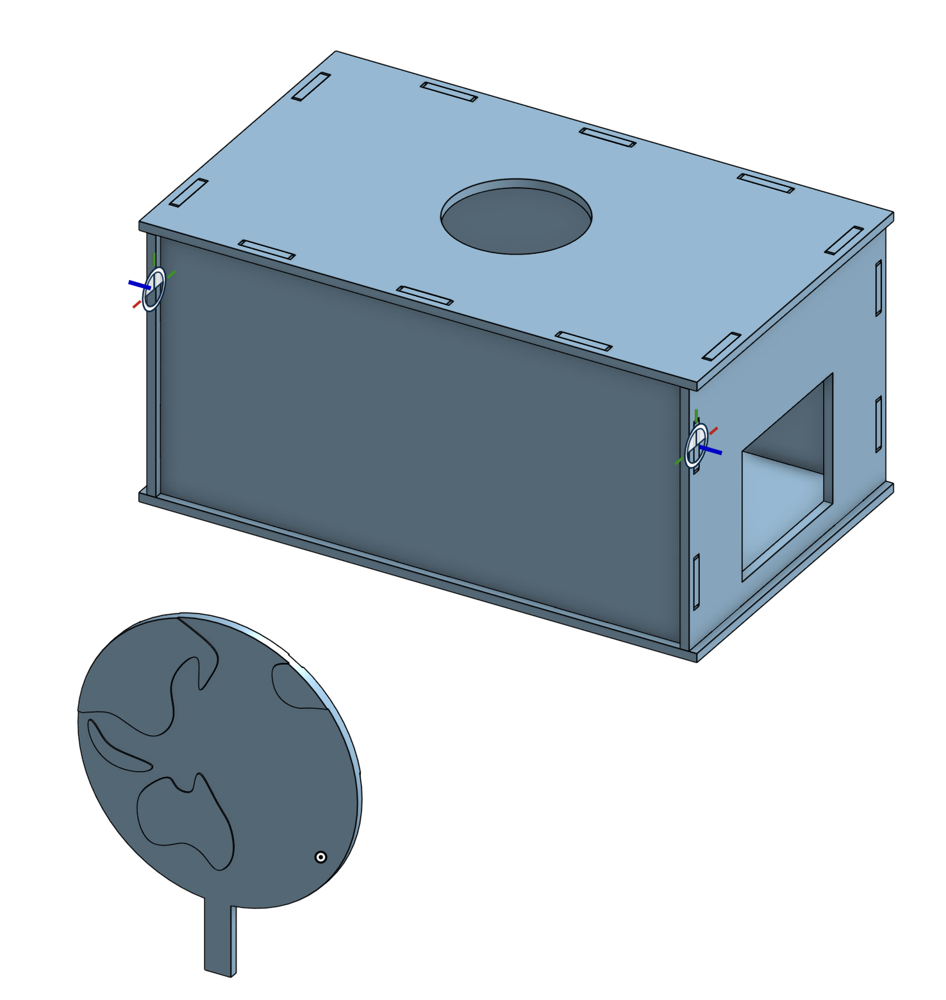
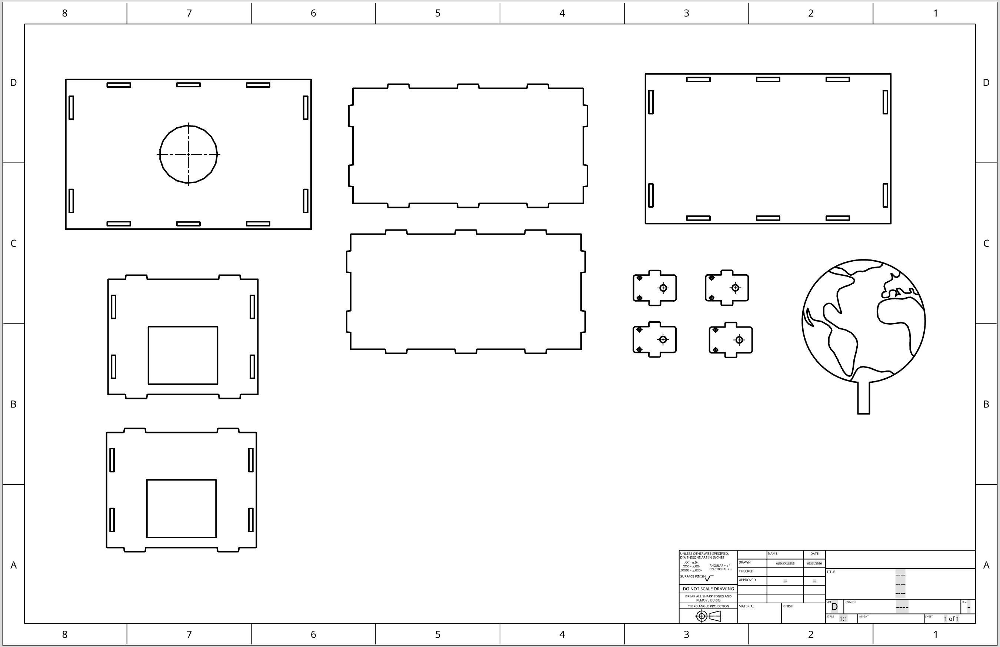
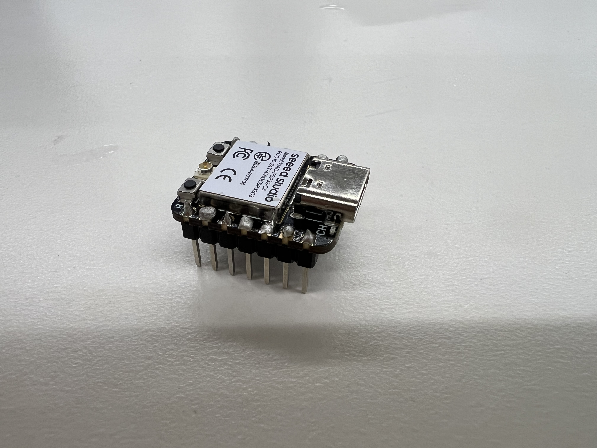
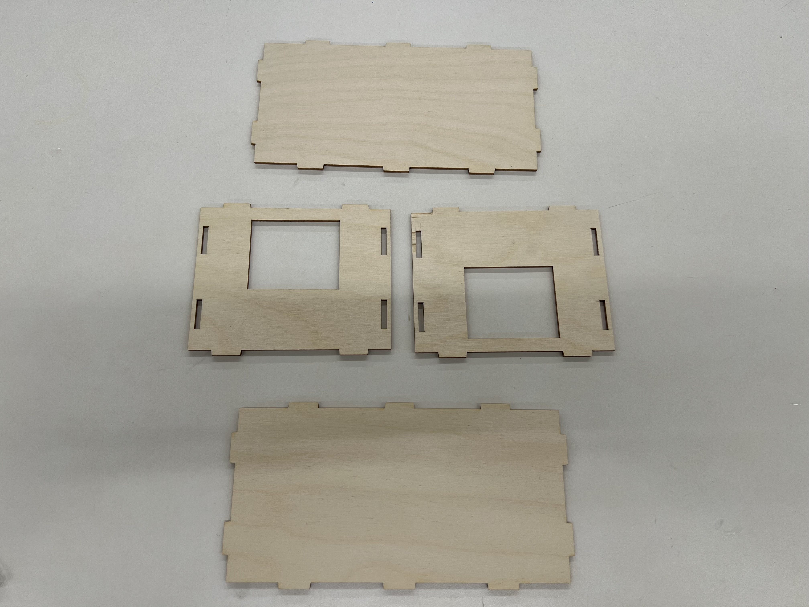
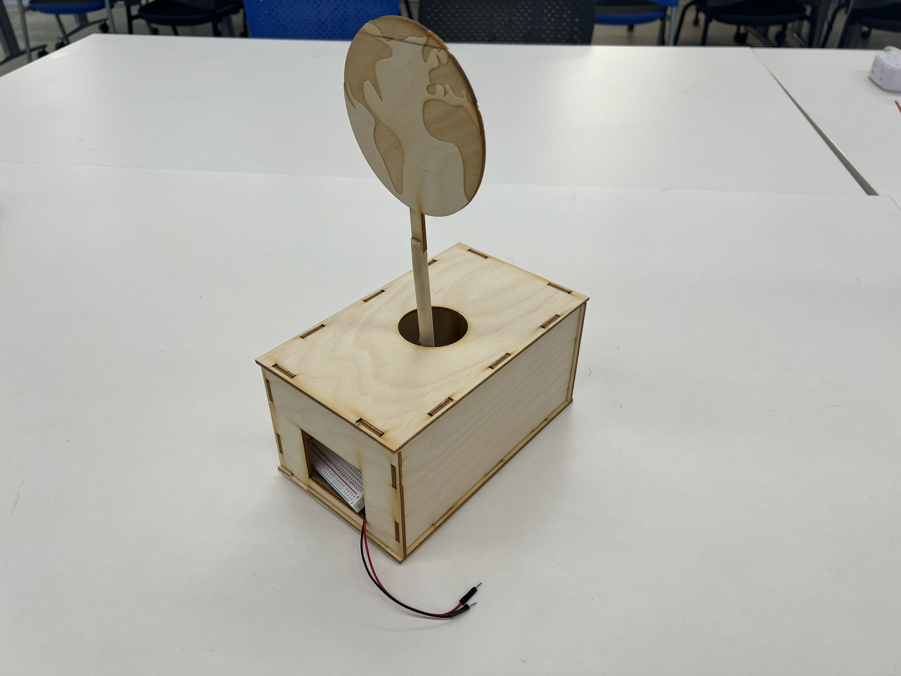
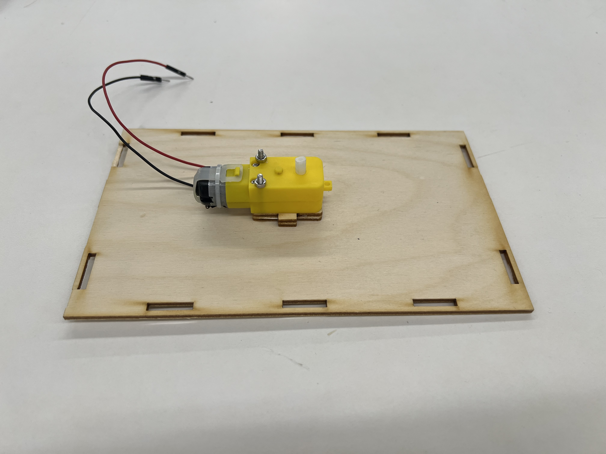
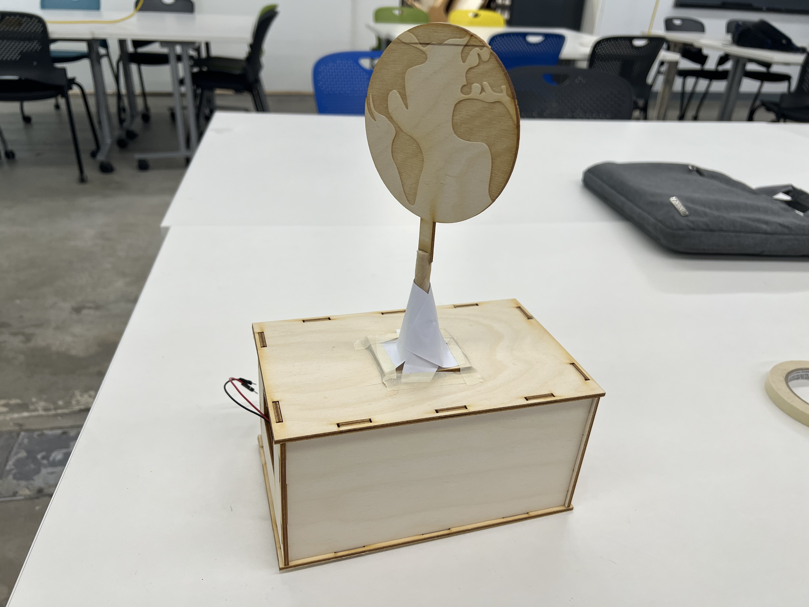

Given I arrived late to the summer school, and have missed the first assignment, I decided to combine the slot-box and kinetic sculpture into one design.



Individual & Assembled CAD Design
I modelled each of the sides of the box in Onshape, being very careful to check my measurements as I went along given the very short amount of time I could spend on this assignment. I was actally unaware that the finger-like joints was a key point of the design assignment, so I picked slots instead due to their simplicity. I also decided to keep the kinetic part, very very simple, as I had just arrived and had not a lot of time. So, inspirsed by the Universal logo at the start of some movies, I chose to design a simple spinning disk, on which the Earth is projected. The top side of the box therefore had a large circle cut out of it, to allow a dowel which would hold the disk up to protrude from the box. I used the motor mount and holder designs from the lab as well to hold the motor down. At this point I was concerned that the attachment between the disk and motor is a simple piece of slender dowel, which isn't very stable, but I decided that was a hurdle to jump once laser cut.

Damaged ESP32 Board (Bad soldering)
I chose to laser cut straight onto wood, bypasing the prototype stage with cardboard, in the name of speed and getting a good combined box and sculpture in time for the deadline. My measurement checking paid off as all of the pieces were sized correctly and interlocked correctly. One thing I did learn though is that the cutting depth (Z-focus) on the laser cutter needs to be a bit higher than what I put it at (3.7mm for 3.5mm wood). Before assembling the box, I soldered connections onto my ESP32 and had been doing a good job until some of the solder got onto the heat sink of the ESP32 chip. I tried my best to remove it, but seemed to make it worse, and I think some of it got onto other connections on the board, which killed the board. So I was given a pre-soldered ESP32.



Individual & Assembled parts of the box/sculpture.
Once cut, I put together the pieces and they all fit perfectly - largely thanks to the tolerances I built into the slots. The motor mount works really well on the base of the box, and is centred correctly. Now came the tricky part: How do I attach the disk to the motor in a stable way? I initially tried simply wood gluing it on. This did hold for a moment, as the glue was very strong, but it was wonky and eventually the dowel came loose from the motor.

Final box/sculpture and demonstration video.
I finally found the fix, by using an offcut from one of the side panels. I drilled a hole that could just about fit the dowel through it, fed the dowel in, and wrapper paper around it to prevent the dowel and disk from moving side to side. Whilst not an aesthetic solution, this works very well for stability, and completes my box and kinetic sculpture. Now the earth spins (See video below).